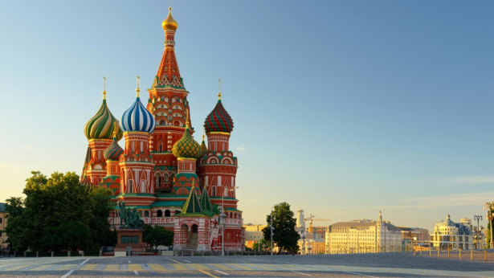

Главная
О компании
Контакты
Достопримечательности
info@localguide.ru
Москва
Cвязаться с нами
Храм Василия Блаженного

Собор Покрова Пресвятой Богородицы на РВУ
Православный храм в Москве
Достопримечательность в Москве